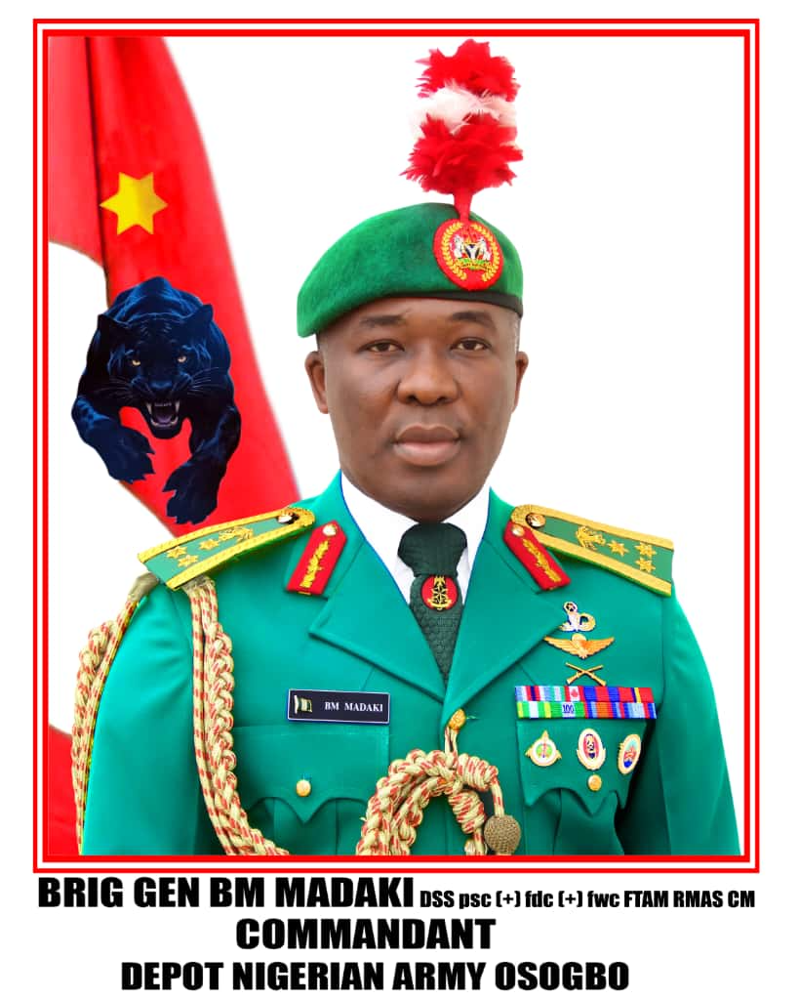
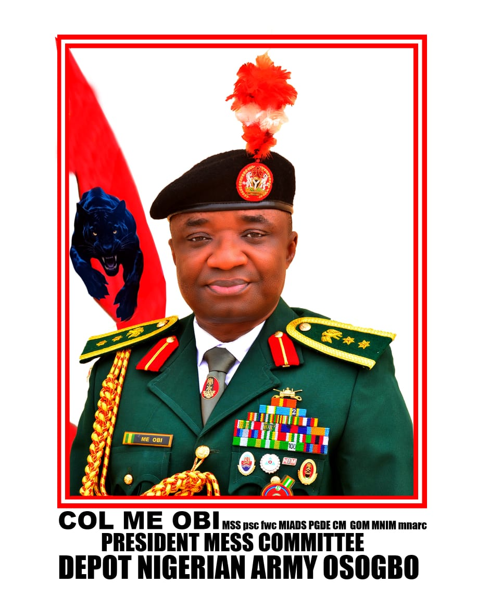

Brigadier General Buhari Michael Madaki is a member of 47 Regular Course of the Nigerian Defence Academy and Commissioning Course 001 of the Royal Military Academy Sandhurst. He is of the Infantry Corps and is a holder of master's degrees in International Affairs and Strategic Studies from the Nigerian Defence Academy as well as International Defence and Security from Cranfield University. He is an alumnus of the Harvard Kennedy School and holds an executive certificate in public leadership.
His professional courses include the Higher Defence and Strategic Studies Course at the National Defence College Abuja (Sept 2022 – Sept 2023), Higher Military Strategy and Management Course at the Army War College Nigeria (Apr – Dec 2018) and Infantry Commanding Officer's Course at the Nigerian Army School of Infantry Jaji (Sept – Dec 2016). He also attended the Military Training Assistance Programme Junior Command and Staff Course in Canada (2007) and has completed the Advanced Airborne Course, qualifying as a jump master.
Madaki has served in various capacities cutting across instruction, staff, command and diplomacy. He served as Instructor at the Airborne Wing of the Nigerian Army School of Infantry (2005–2008), Company Commander 4 Guards Battalion (2008–2010), Military Assistant to the Commandant of the Nigerian Defence Academy (2011–2012) and Acting Commanding Officer 72 Special Forces Battalion (2013–2014). He was Directing Staff at the Armed Forces Command and Staff College Jaji (2016–2018) and the National Defence College Abuja (2024–2025). He also served as Defence Attaché to Mali with concurrent accreditation to Senegal, The Gambia, Mauritania, Cape Verde and Western Sahara (2019–2022).
Madaki is the recipient of the Overseas Sword of Honour from the Royal Military Academy Sandhurst. His other awards include the United Nations Mission in Liberia Medal, Nigeria Centenary and Golden Jubilee Medals, General Operations and Foreign Training Assistance Medals, and the Royal Military Academy Sandhurst and Command Medals.
Passionate about the Airborne and committed to remaining physically and mentally fit, Madaki is a wildlife enthusiast who enjoys jogging and watching movies. His philosophy is hinged on goodwill and leadership through service. He is married with children.

Colonel Mathias Eshian Obi was born on 26 December 1976 in Bansan Osokom town of Boki Local Government Area, Cross River State. He attended Saint Manus' Primary School Okundi, Government Secondary School Ikom and the University of Calabar. He was enlisted into the Nigerian Defence Academy in January 2002 as a member of Short Service Combatant Course 31 and was commissioned 2Lt on 29 June 2002 into the Nigerian Army Armoured Corps. He holds a Bachelor of Agriculture (Hons) in Soil Science, a Masters in International Affairs and Defence Studies and a Post Graduate Diploma in Education.
Colonel Obi has attended numerous courses including Young Officer Course Armour and Infantry, Anti-Tank Platoon Commander Course, Regimental Intelligence and Security Officers' Course, Armour Mid Career Course, Armour Company Commander's Course, Armour Battalion Commander's Course, Junior and Senior Course, Protection of Civilians Course in Argentina, Nigerian Army French Language Course, African Contingency Operations and Training Assistance Course, and Army War College Nigeria.
He has served in 211 Tank Battalion, Nigeria Battalion 4 UNMIL, 211 Demo Battalion, 242 Recce Battalion, Nigeria Battalion UNAMID (Darfur), HQ 23 Brigade, Military Observer Mission in the DRC, HQ 22 Brigade, 221 Light Tank Battalion, 212 Tank Battalion, AHQ DARR/R, 231 Tank Battalion, HQ Nigerian Army Armour Corps, HQ Multinational Joint Task Force, and HQ Operation Safe Haven.
Obi has participated in Operation HARMONY IV, United Nations Mission in Liberia and Darfur, Operation MESA, MONUSCO, Operation ZAMAN LAFIYA, Operation DEEP PUNCH, Operation RESCUE FINALE, Operation LAFIYA DOLE, Operation AYISO TAMUNOMA, Operation TURA TAKAIBONGO, Operation HARDIN KAI, Operation YANCI TAFKI, Operation LAKE SANITY and Operation SAFE HAVEN.
Colonel Obi is a recipient of the Meritorious Service Star, Forces Service Star, Passed Staff College, Fellow War College, General Operations Medal and Command Medal. He is a proud member of the National Institute of Management and the Nigerian Army Resource Centre.
At leisure, Colonel Obi enjoys jogging, playing badminton and volleyball, studying people, conflict resolution, nature watching, reading, and listening to news and music. He is married and the union is blessed with children.